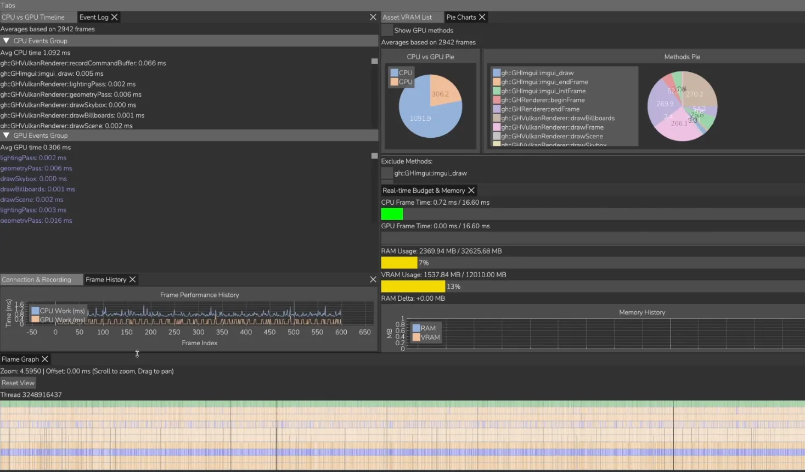

A rendering engine built from the ground up in Vulkan and C++ as part of a University Assignment
The goal was to understand how modern game engines work on the inside and their architecture while learning a rendering API. Altough the course was meant to teach OpenGL we decided to learn a modern API like Vulkan. This meant more research on our end.
My bigger contributions to the project where the Vulkan and general app architecture, the data oriented ECS system inspired by the one used in Autodesk Stingray, data streaming optimizations and the custom profiler built as an external app connected via UDP in case we wanted to port the engine to a console. Personally I wanted to create a easy to use experience for the user while trying to optimize the resources on the backend.
On the Vulkan backend I tried some modern techniques like bindless textures and dynamic rendering while also using some common practices like RAII and VMA.
Highlights
- Entity Component System following a Data-Oriented Design for cache-friendly iteration.
- Streaming system for textures and meshes with memory management for optimization.
- External profiler tool connected over UDP.
- Core Vulkan infrastructure and render pass architecture.
Tools
- Vulkan
- GLFW
- ImGui / ImPlot
- Assimp
- RenderDoc
- Git
Languages
- C++
- GLSL

